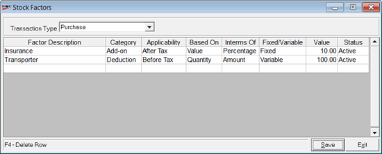

This option is used to catalogue stock factors for multiple Add-ons, Deductions and is applicable only for Inwards transactions.
How to reach: Catalogue > Factors > Stock Factors
The Stock Factors window is displayed.

Transaction Type: Select the type of transaction (only Inwards transaction)s.
Factor Description:Enter an identification name for the factor
Category: Select the type of category as Add-ons or Deductions
Applicability: Select tax applicability After Tax or Before Tax
Based On: Select amount to be calculated based on Value or Quantity
Interms Of: Select amount to be calculated in terms of Percentage or Amount
Fixed/Variable: Select if the stock factor is Fixed or Variable
Value: Enter the quantum of the stock factor
Status:The status of the stock factor is shown here